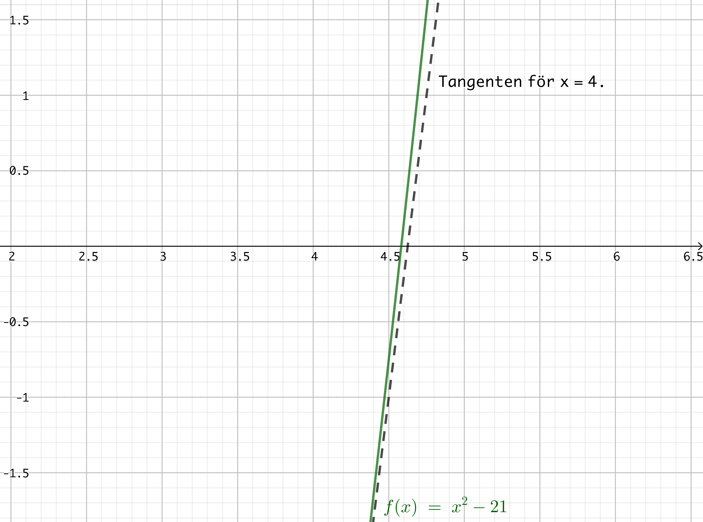
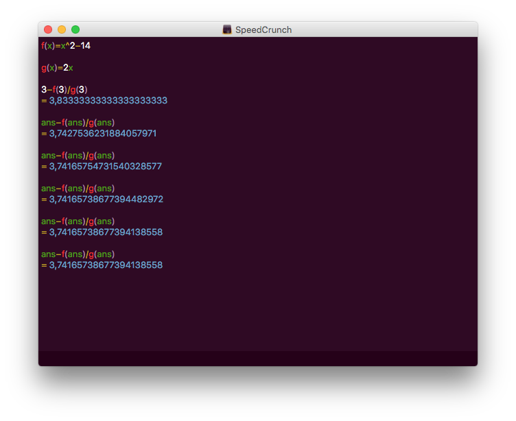
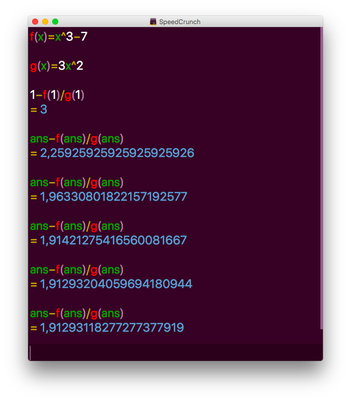
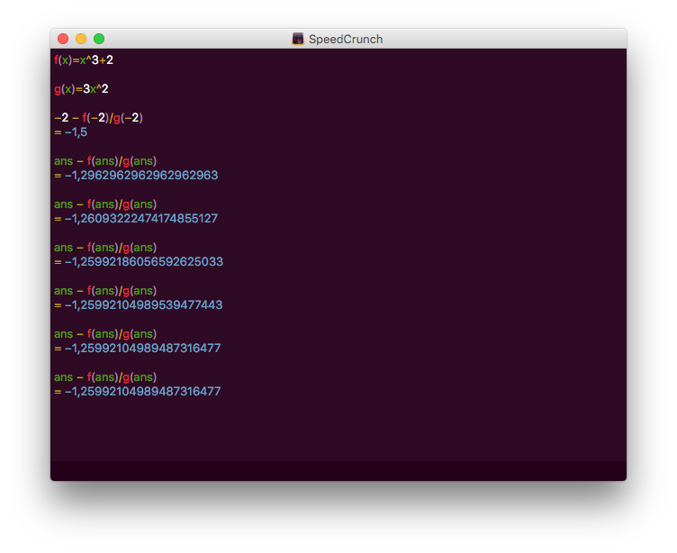

6. Newton-Raphsons metod
Newton-Raphsons metod är en numerisk metod med vars hjälp vi får rötterna, lösningarna. Den har fått sitt namn efter Isaac Newton och Joseph Raphson. Ibland kallar man den endast för Newtons metod.
Bestäm närmevärdet av \( \sqrt{21} \).
Vi vet att \( 4 < \sqrt{21} < 5\).
Vi skall lösa \( x^2 = 21\), \( x>0\), alltså \(x^2-21=0\), alltså nollstället för \(f(x)=x^2-21\).
Vi löser det med hjälp av några tangeter.
Vi utnyttjar oss av tangenter och itererar oss fram till närmevärdet. Tanken är följande:

Vi behöver ett startvärde, \(x_1\).
Tangentens ekvation är \( y - f(x_1) = f'(x_1)(x-x_1) \).
Skärningspunkten har \( y=0 \). Alltså
\(\begin{array}{rcl} 0 - f(x_1) & = & f'(x_1)x -f'(x_1)x_1 \\ f'(x_1)x_1 - f(x_1) & = & f'(x_1)x \\ f'(x_1)x & = & f'(x_1)x_1 - f(x_1) \\ x & = & x_1 - \dfrac{f(x_1)}{f'(x_1)} \\ \end{array}\)
Metoden kallas Newtons eller Newton-Raphsons metod.
Vi väljer \( x_1 = 4 \), \(f'(x)=2x\), och får då
\( \begin{array}{rcl} x_1 & = & 4 \\ x_2 & = & 4 - \dfrac{4^2-21}{2\cdot 4} = 4,625\\ x_3 & = & 4,625 - \dfrac{4,625^2-21}{2\cdot 4,625} = 4,58277\ldots \\ \vdots \\ \end{array}\)
Själva uträkningen med iterationer gör vi lättast på räknare eller räknarprogram.
På SpeedCrunch ser det ut som följande:

Vi slutar iterera när decimalutvecklingen är konstant. Vi får att \( \sqrt{21} = 4,58257569495584000659\).
Exempel 1 Bestäm nollstället för funktionen \( f(x)=x^3-5x+5 \)
Lösning
Vi behöver en kvalificerad gissning för nollstället. Då vi ritar grafen av \( f \) märker vi att roten är mellan \( -3 \) och \(-2\). Vi väljer \( x_1 = -3 \).
Eftersom \( f(x)=x^3-5x+5 \) är \( f'(x)=3x^2-5 \).
Sedan itererar vi

Vi märker att nollstället är \( −2,62736508471183313934 \).
Med Newtons formel får vi numeriska lösningar åt ekvationer. Vi formar om ekvationen till en funktion. Då söker vi nollställena för funktionen.
Vi behöver en kvalificerad gissning, startvärde, \( x_1 \) och sedan utnyttjar vi och itererar med formeln \[ x = x_1 - \dfrac{f(x_1)}{f'(x_1)}. \]
Uppgifter
- Bestäm närmevärdet för följande kvadratrötter med hjälp av Newtons metod.
- \( \sqrt{14} \)
Eftersom \( 3 < \sqrt{14} < 4 \) är 3 eller 4 bra startvärden.
\( f(x) = x^2-14\) och \( f'(x)=2x \).
Med startvärdet \( 3 \) får vi

Alltså \( 3,74165738677394138558 \).
- \( \sqrt{31} \)
Eftersom \( 5 < \sqrt{31} < 6 \) är 5 eller 6 bra startvärden.
\( f(x) = x^2-31\) och \( f'(x)=2x \).
Med startvärdet \( 5 \) får vi

Alltså \( 5,56776436283002192212 \).
- \( \sqrt{42} \)
Eftersom \( 6 < \sqrt{42} < 7 \) är 6 eller 7 bra startvärden.
\( f(x) = x^2-42\) och \( f'(x)=2x \).
Med startvärdet \( 7 \) får vi

Alltså \( 6,48074069840786023097 \).
- \( \sqrt{14} \)
- Bestäm närmevärdet för följande rötter med hjälp av Newtons metod.
- \( \sqrt[3]{14} \)
Eftersom \( 2 < \sqrt[3]{14} < 3 \) är 2 eller 3 bra startvärden.
\( f(x) = x^3-14\) och \( f'(x)=3x^2 \).
Med startvärdet \( 2 \) får vi

Alltså \( 2,41014226417522998613 \).
- \( \sqrt[3]{7} \)
Eftersom \( 1 < \sqrt[3]{7} < 2 \) är 1 eller 2 bra startvärden.
\( f(x) = x^3-7\) och \( f'(x)=3x^2 \).
Med startvärdet \( 1 \) får vi

Alltså \( 1,91293 \). För att få noggrannare värde måste vi iterera mera.
- \( \sqrt[4]{17} \)
Eftersom \( 2 < \sqrt[4]{17} < 3 \) är 2 eller 3 bra startvärden.
\( f(x) = x^4-17\) och \( f'(x)=4x^3 \).
Med startvärdet \( 1 \) får vi

Med tillräkligt många iterationer får vi \( 2,03054318486893071787 \).
- \( \sqrt[3]{14} \)
- Bestäm nollstället för \( f(x) = x^3-x^2+1\).
Vi ritar grafen eller gissar oss fram till att \( -1 \) är ett bra startvärde. Vi får

Alltså \( −0,75487766624669276005 \).
- Bestäm nollstället för \( f(x) = x^3+2\).
Vi ritar grafen eller gissar oss fram till att \( -2 \) är ett bra startvärde. Vi får

Alltså \( −1,25992104989487316477 \).
- Bestäm nollstället för \( f(x) = -x^3-2x^2-1\).
Vi ritar grafen eller gissar oss fram till att \( -2 \) är ett bra startvärde. Vi får

Alltså \( −2,2055694304005903117 \).
- Låt \( f(x)=x^3 -2x +2 \). Bestäm nollställena via startvärdena 0 och 1. Var för är 0 och 1 dåliga startvärden då vi söker nollställena med Newtons metod?
Då vi ritar ut tangenterna i \( x = 0 \) och \( x=1 \) får vi följande bild

Vi märker att tangenternas nollställen ger den andra tangenten. Det betyder att vi hoppar mellan värdena.
- Funktionen \( f(x) = -x^3+4x+1 \) har 3 stycken nollställen. Bestäm alla tre med hjälp av Newtons metod genom att välja lämpliga startvärden.
Vi ritar grafen märker vi att \( -2 \), \( 0 \) och \( 2 \) är bra startvärde.
Vi får följande närmevärden: \( x_1 = -1,860805853112 \), \(x_2=-0,254101688365 \) och \(x_3 = 2,114907541477\).
- Funktionen \( f(x) = x^4 - 5x^2 + 6 \) har 4 stycken nollställen. Bestäm alla tre med hjälp av Newtons metod genom att välja lämpliga startvärden.
Vi ritar grafen märker vi att \( -2 \), \( -1 \), \( 1 \) och \( 2 \) är bra startvärde.
Vi får följande närmevärden: \( x_1 = -1,7320508076 \), \(x_2 = -1,4142135624 \), \( x_3 = 1,4142135624 \) och \( x_4 = 1,7320508076 \).
- En del av kursen är att lära sig programmera. Gå till tie.koodariksi.fi, registrera dig och börja jobba på Ohjelmoinnin alkeet. Uppe till höger kan du byta språk.
Jobba ca en timme med materialet, eller med kapitlen 15.